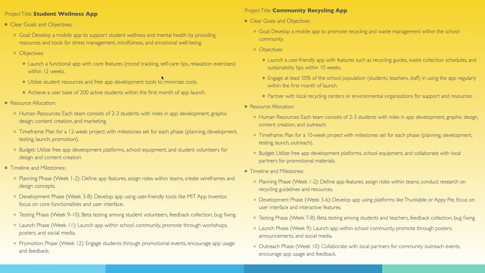

Identify system goals. Primary objectives and outcomes that the system should achieve. What is the program trying to do?
Define project scope. Boundaries, deliverables, and constraints– features, functionalities, and target users.
Set objectives. SMART: Specific, measurable, achievable, relevant, time bound. Aligns with system goals and project scope.
Establish timeline. How long will it take? Milestones, checkpoints, phases, deadlines, and some leniency in timing.
Determine available resources. Identify and allocate necessary resources. Human resources, budget, technology, materials for project implementation.
Importance. Ensure alignment with organizational needs, sets clear direction.
Understand system requirements. Through interviews, process study, analyze existing system processes.
Identify stakeholders’ needs, preferences, and challenges. Ensure project meets expectations. 
User-centric design. Meets their needs and preferences.
Usability. Intuitive, easy to use. Accessible (usable by as many people as possible, even with disabilities) and ergonomic.
Feedback Integration. Involving end users in the planning process. Open to suggestions.
Adoption and acceptance by end-user due to good design: Long term success.